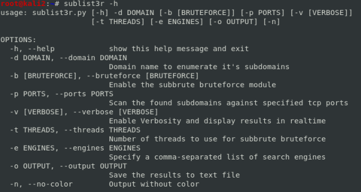
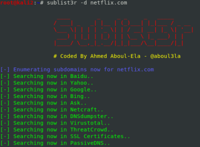

sublist3r (OSINT)
sublist3r
:
https://github.com/aboul3la/Sublist3rOne of the
first subdomain enumeration tool, now anyway there are better tools out there
example:

subbrute module
:
-b or
--bruteforce → Enable the subbrute bruteforce
module
subbrute is integrated with Sublist3r that increase the possibility of finding more subdomains using
bruteforce with a wordlist(txt file with one possible subdomain for line)